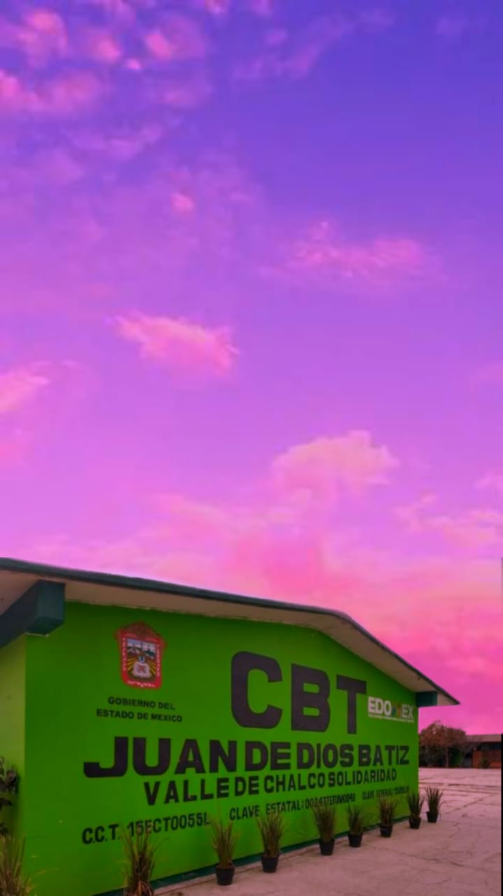

Misión:
Proporcionar una educación que permita a los estudiantes de Bachillerato Tecnológico convertirse en ciudadanos con alto nivel de desarrollo de habilidades académicas y que se les valore por su humanidad y no sólo por su inteligencia, además de que se les permita acceder a instituciones de Nivel Superior y/o al campo productivo.
Visión:
Ser una institución con proyección e impacto social relevante, de la cual egresen estudiantes de Bachillerato Tecnológico que estén a la vanguardia de los requerimientos académicos, científicos y tecnológicos que demanda la sociedad actual. Los cuales tengan una postura reflexiva, propositiva, resolutiva y con una formación con base en los valores que redunden en su calidad humana.
Valores:
- RESPETO:
- Mostrar respeto por el valor y la dignidad de alguien o de algo, siempre con trato amable y tolerante para todos.
- RESPONSABILIDAD
- Entendida como el realizar lo que corresponde desde el ámbito de la función de cada persona
- SOLIDARIDAD
- Nos obliga a ir más allá de nosotros mismos, de nuestros intereses personales o necesidades particulares.
.
¿Quiénes somos?
Los Centros de Bachillerato Tecnológico (CBT) son una modalidad de Bachillerato bivalente, ¿Qué es esto? Es un tipo de bachillerato en el cual se llevan a cabo las materias del tronco común, con la diferencia de que llevarás al mismo tiempo una Carrera Técnica, agrupadas en cuatro áreas o campos de formación: Biotecnología, Salud, Servicios e Industrial.
En el CBT Juan De Dios Bátiz, Valle de Chalco Solidaridad se imparte la Carrera de Técnico en Informática, que forma parte del campo de servicios y es cursada por medio de una estructura modular.
- Carrera de Técnico en informática
Es una carrera técnica, en la cual al terminar tus estudios podrás incluirte al campo laboral o continuar con el Nivel Superior. Es una de las carreras más demandadas ya que al ir revolucionando las Tecnologías de la Información y la Comunicación se necesitarán personas capaces de diseñar, gestionar e implementar este tipo de herramientas. En esta carrera se ofrecen las competencias profesionales que permiten al estudiante realizar actividades dirigidas a analizar, diseñar, desarrollar, instalar y mantener software de aplicación tomando como base los requerimientos del usuario.

script src="https://code.jquery.com/jquery-3.5.1.min.js">